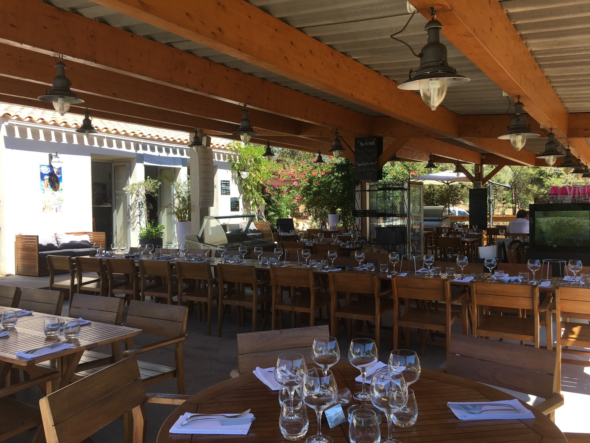
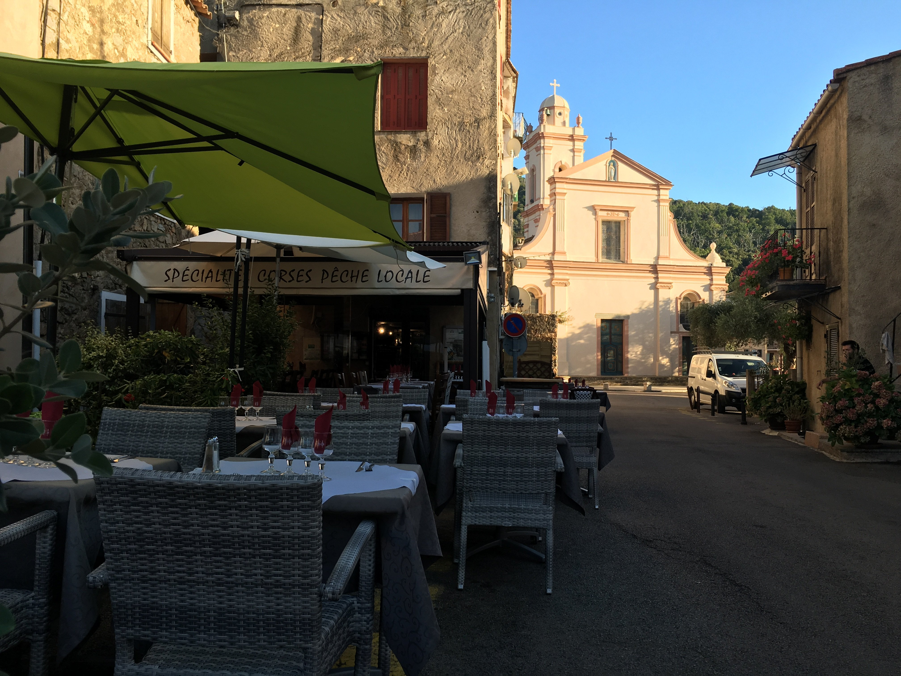
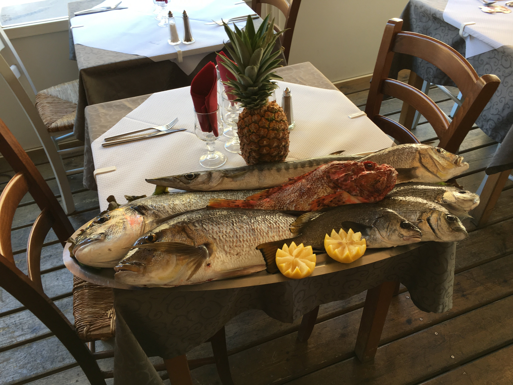
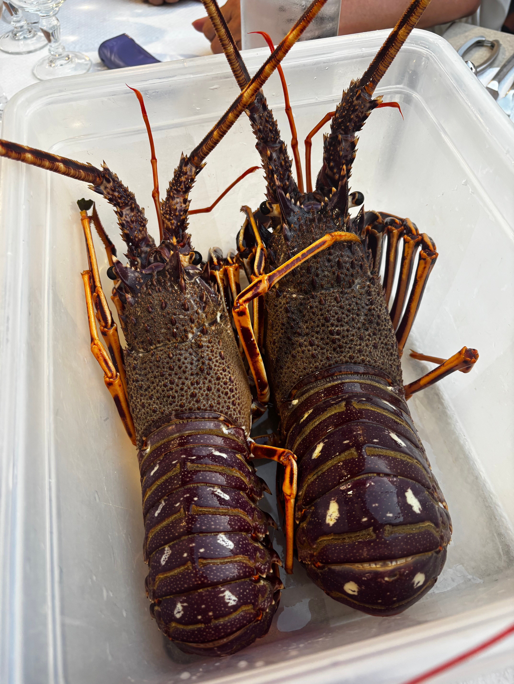
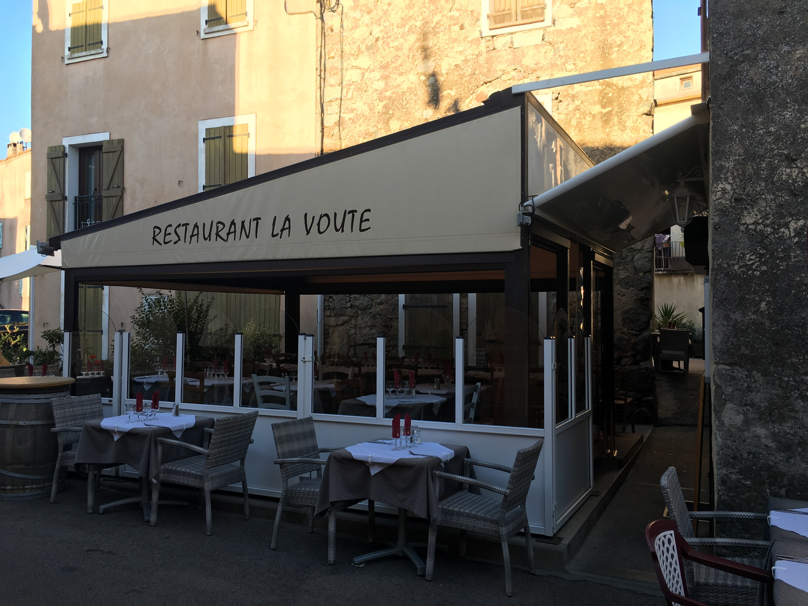
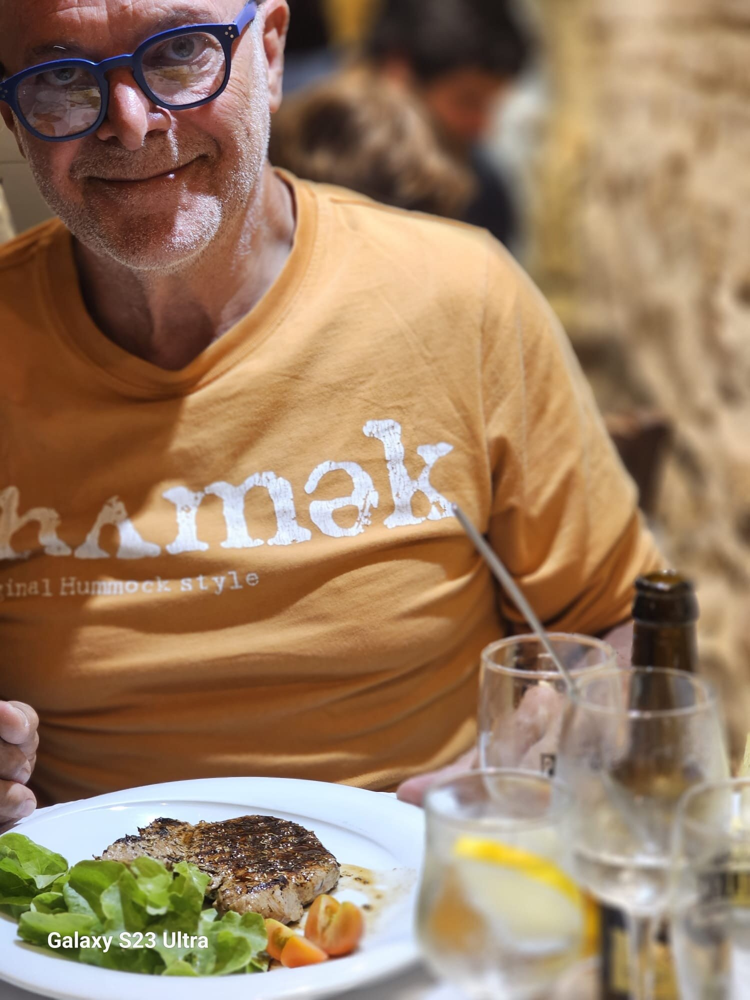
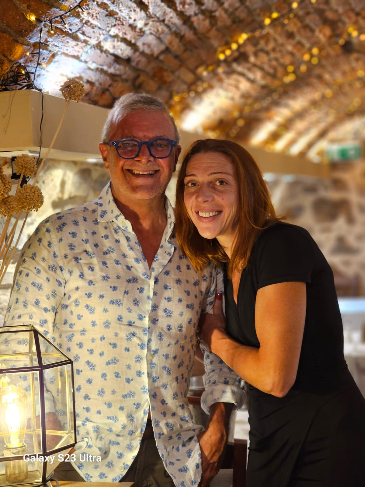

Cannelloni au brocciu
Le plat qu'on vient chercher ici, frais, herbes du maquis.
Place de la Fontaine . Piana . Calanques

Joseph pêche au petit matin dans le Golfe de Porto, Antonella vous accueille sous la voûte. Cannelloni au brocciu, homards du vivier, poisson du jour : la Corse dans l'assiette, depuis toujours.
* La carte évolue avec la mer. Appelez pour confirmer la disponibilité du jour.


Depuis toujours
Joseph est pêcheur et agriculteur. Antonella tient la salle et raconte chaque assiette. Ensemble ils cuisinent ce qu'ils ramènent : le poisson sorti du filet au matin, l'agneau de l'éleveur voisin, le brocciu pour les cannelloni. Pas d'intermédiaire, pas de carte figée, pas de faux-semblant.
La salle, c'est la voûte en pierre qui donne son nom à la maison : fraîche l'été, chaleureuse l'hiver, centenaire. La terrasse donne sur la Place de la Fontaine, à l'ombre des platanes du village classé.

Sous la voûte
Salle voûtée intérieure, pierre apparente et volets bleu lavande. Terrasse sur la Place de la Fontaine, aux premières loges du village classé. Été comme hiver, on y mange les pieds dans la Corse.
Trois plats, trois piliers
Posez la clef, la voûte tient. Pas de clef, pas de cuisine. Métaphore simple : la famille, c'est ce qui maintient tout en place.

Le plat qu'on vient chercher ici, frais, herbes du maquis.

Sorti devant vous, grillé ou à l'armoricaine, Golfe de Porto.

Ce que Joseph a ramené au petit matin, cuit simplement.
Paroles de table
4,7 sur 5 . 1 059 avis Google . Travellers' Choice TripAdvisor
Un vrai régal, cuisine traditionnelle avec des produits ultra frais. Sans doute le meilleur restaurant de Piana.
Restaurant familial avec une cuisine authentique. De vraies gens pour qui le mot "Accueil" a un sens.
Trouver la maison